Exercise: Word Clouds¶
Word clouds are often considered sophmoric, but given the proper context and implemented intelligently, they can be quite informative. Remember, the problem to solve is to communicate a plausible and compelling story. Sometimes a simplistic visualization – like a word cloud – perfectly fits the bill.
With the Toolbox¶
A number of the Toolbox commands support the generation of word clouds. They include: ent, ngrams, pos, and wrd. More specifically, add both the -c and -w options to ent, ngrams, pos, or wrd, and the Toolbox will output a simple word cloud. Use the -q (“query”) or a combination of the -s and -l (“select” and “like”) options to refine the illustration. Examples include:
# normalized and lemmatized nouns from homer
rdr pos homer -s lemmas -l N -c -n -w
# persons from homer
rdr ent homer -s entity -l PERSON -c -w
# keywords from homer
rdr wrd homer -c -w
# bigrams from homer containing the word horse
rdr ngrams homer -s 2 -c -q horse -w
 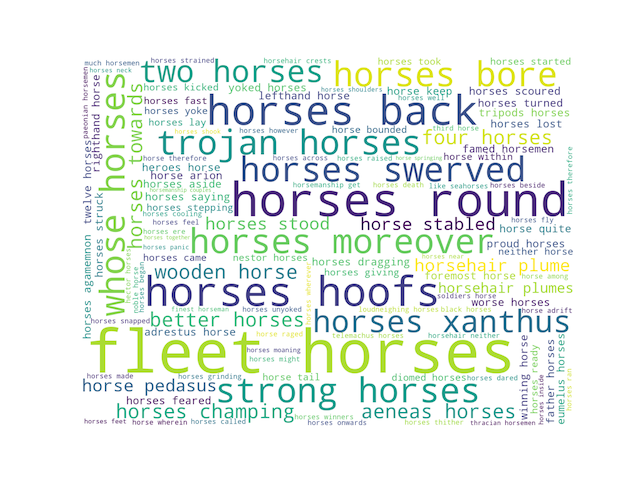
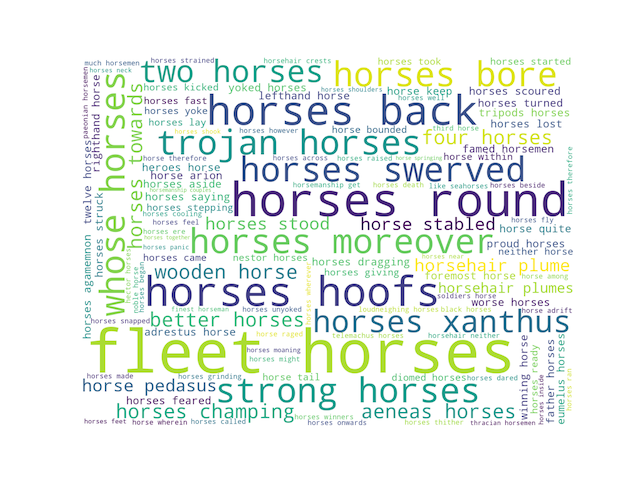
With Wordle¶
Wordle is a very nice word cloud program. Given any set of plain text, Wordle will create word clouds with one or more words, of different fonts, different colors, and different orientations. If the given words in the text are delimited by colon (:) characters and associated with frequencies (“weights”), then Wordle becomes more expressive.
For example, after importing an entire carrel into Wordle and generating a word cloud, the student, researcher, or scholar can quickly and easily begin to tell a little story about any study carrel. For example, given the following nine visualisations, what stories might you be able to tell about the Iliad and the Odyssey?
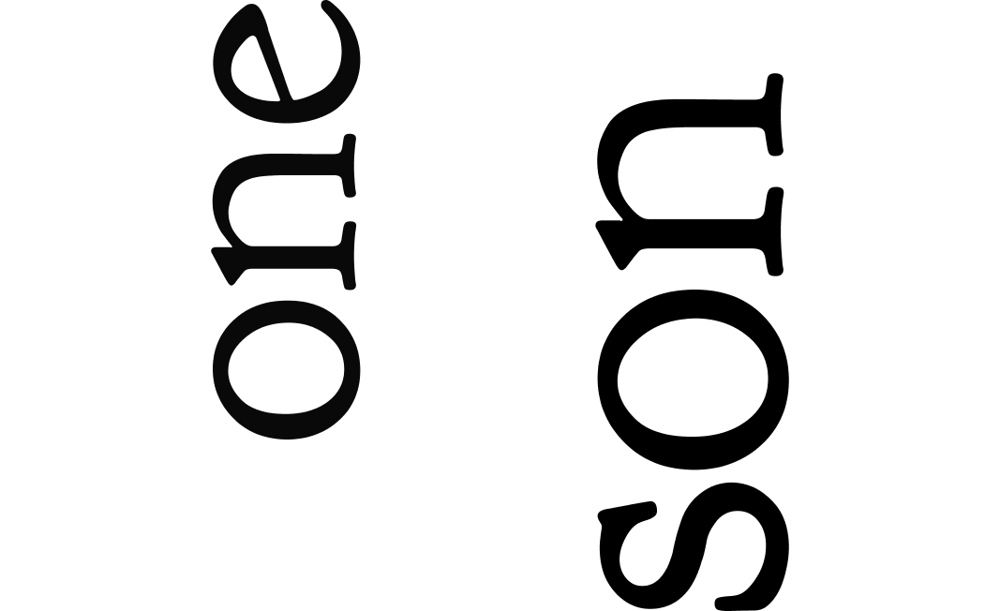 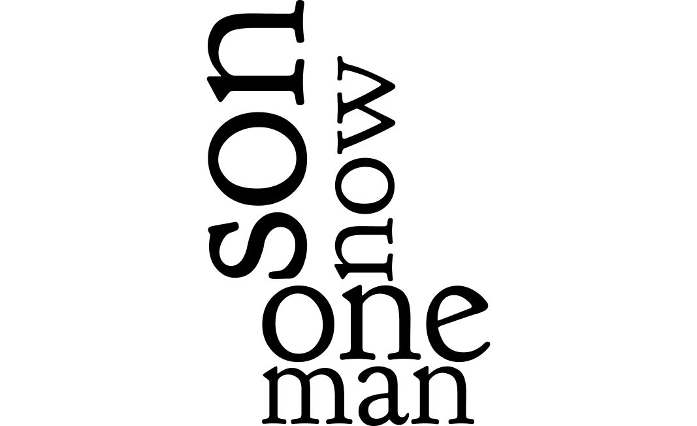{kind=link}
{kind=link}
{kind=link}
 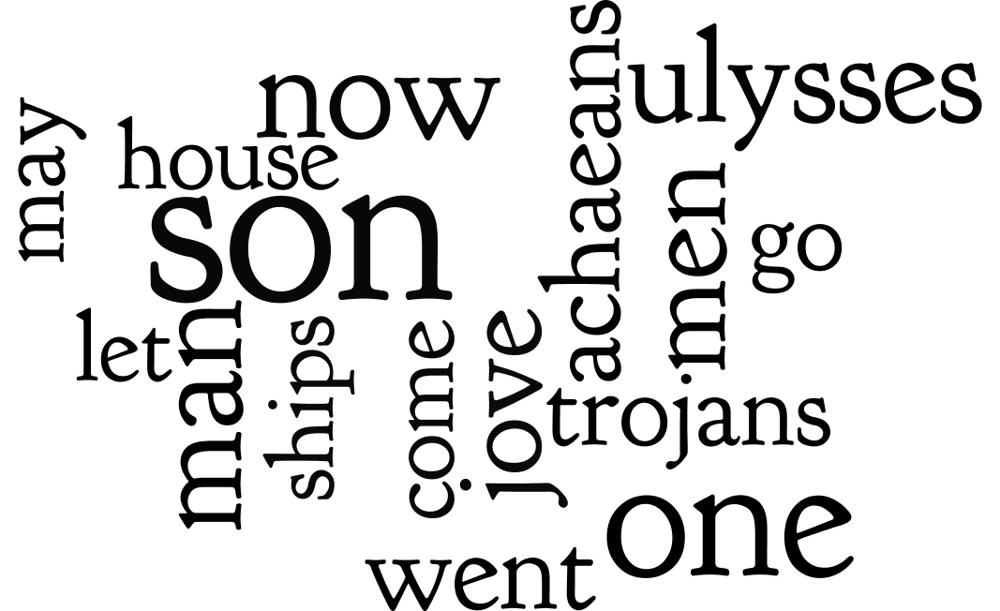
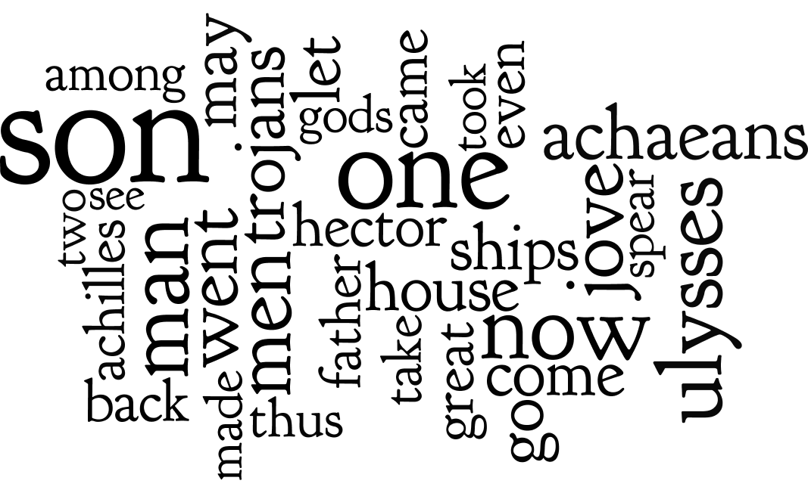
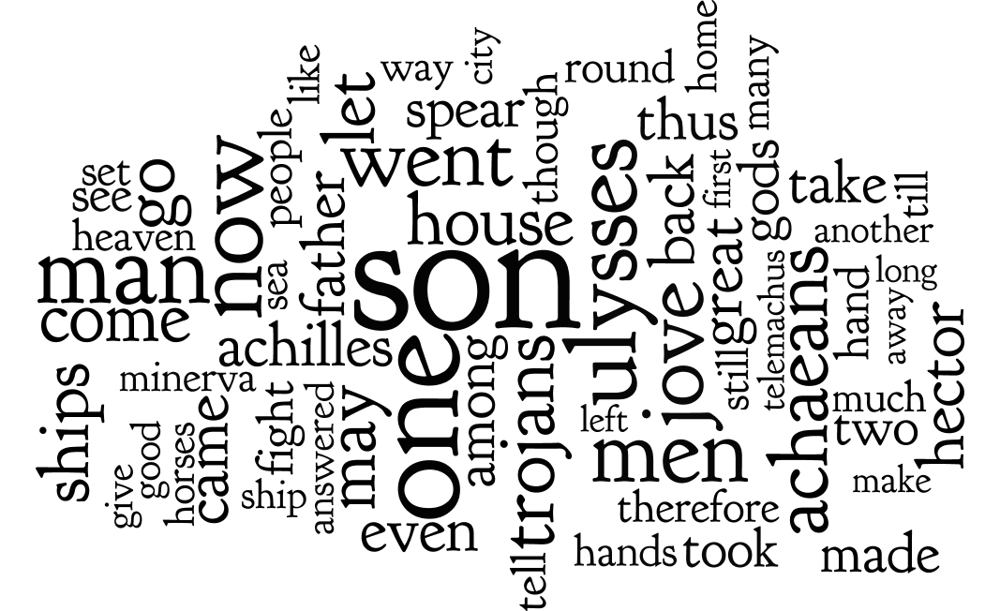
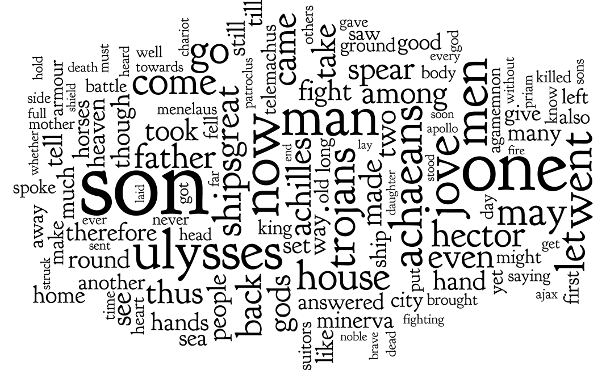
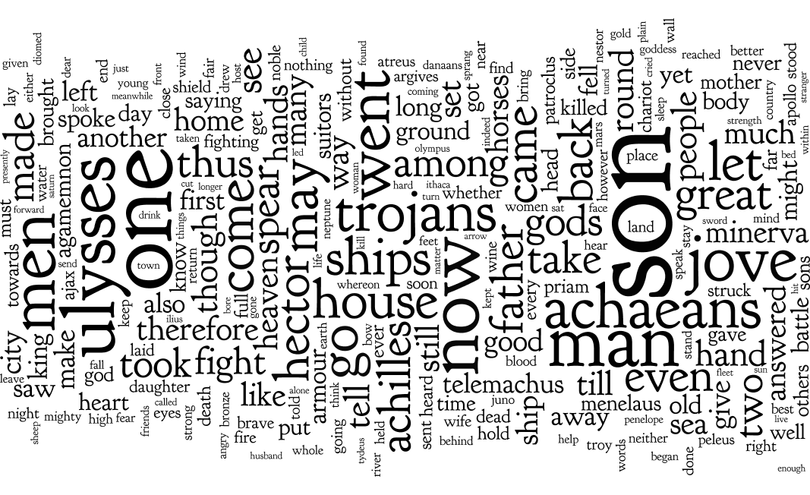
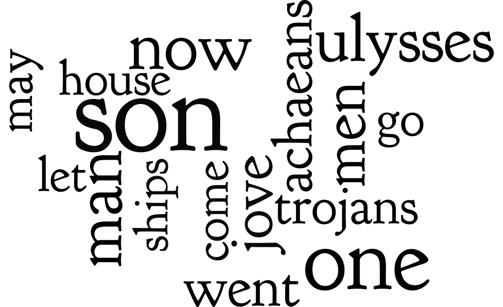
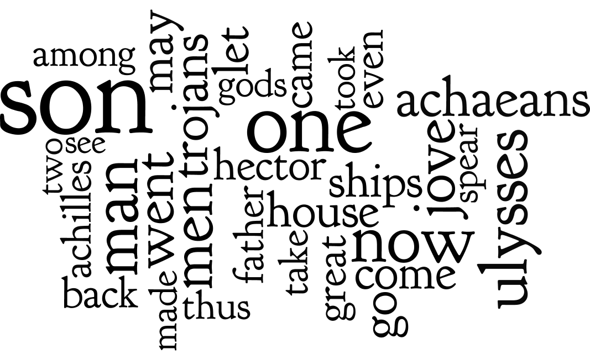
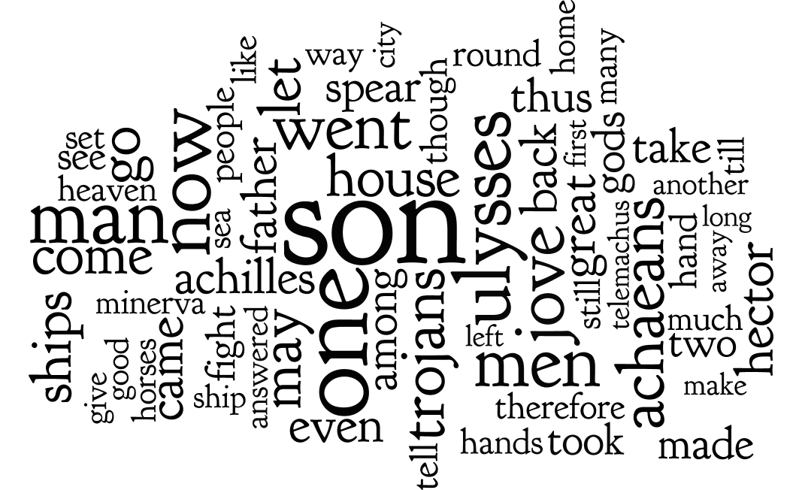
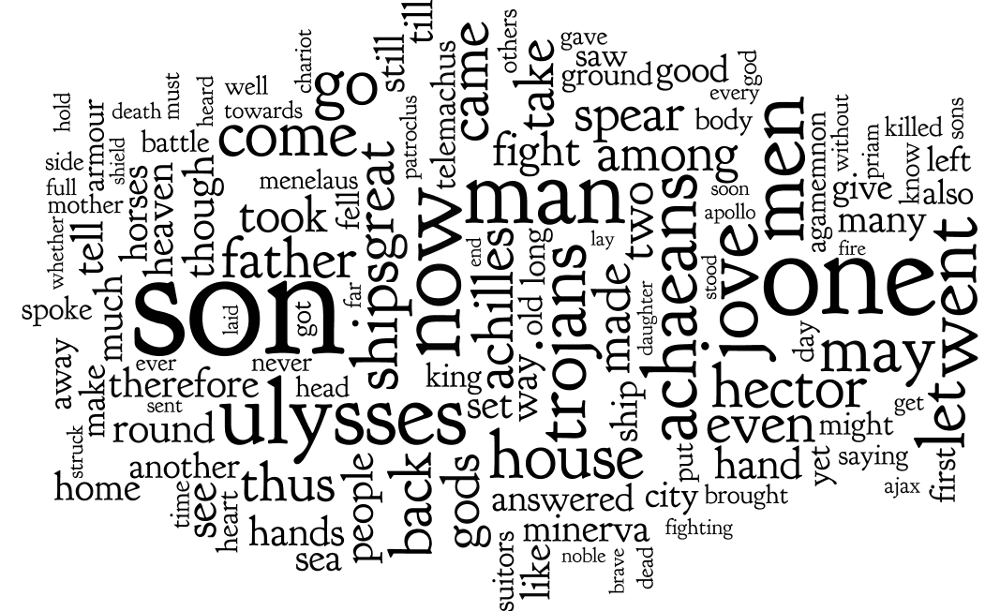
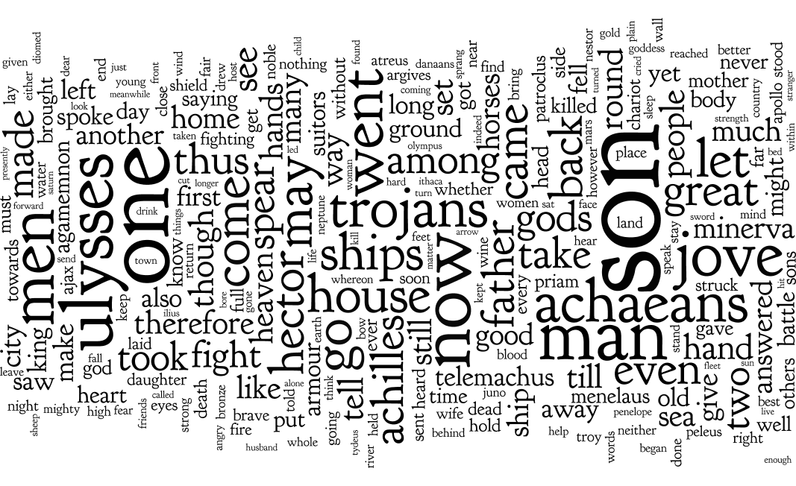
{kind=link}
{kind=link}
{kind=link}
{kind=link}
{kind=link}
Here’s a quick and dirty way to use World with content from any carrel:
use your text editor to open the file <carrel>/etc/reader.txt, where <carrel> is the name of your study carrel; for these purposes, open homer/etc/reader.txt in your text editor; remember, you can be reminded where your study carrels are located using the following command:
rdr get
look more closely at the result; as described in the section on the structure of a study carrel, reader.txt is a concatonation of all the plain text items in the carrel
select all the text in your text editor, and copy it to your clipboard
open Wordle, select the “Your Text” tab, and paste the contents of your clipboard into Wordle (see below); Wordle has no other way to get input
use the Layout/Maximum words… menu option to set the number of words to 1
{kind=link}

click the “Go” button
notice the results; answer the question, “What is the most frequently used word (sans some stop words) in the corpus?”
go to Step #5, and double the value of maximum words
go to Step #8 until you get tired
The same process can be applied to one or more of the individual items in your study carrels. Remember, plain text versions your study carrel items are saved in the carrel’s txt directory. After you identify a one or more specific items of interest, you can open them in your text editor, copy the whole to your clipboard, and paste the result into Wordle.
For example, a search against the homer study carrel for items with the keyword “hector” returns many items, and the first one is homer-iliad_07.txt, which is considered the most relevant:
rdr search homer -q keyword:hector
After importing homer-iliad_07.txt into Wordle and limiting the number of most frequent words to thirty-two, we can see what other words are significant in the item. Thus, we can begin to answer the question, “With what words is Hector associated?”:
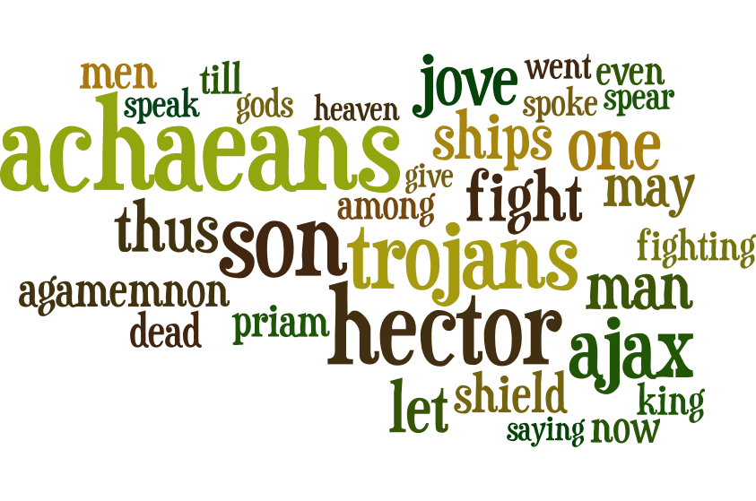With frequencies¶
Wordle takes two types of input: 1) a simple set of plain text, or 2) a list of words or phrases associated with frequencies. Understanding how to create the second type of input enables you to visualize many more things. It also enables you to create more compelling visualizations. The secret is to learn how to: 1) create a list of words, 2) denote their frequencies, and 3) delimit the two with a colon.
Let’s apply this process to unigrams. Here’s how:
count & tabulate the unigrams in the homer study carrel, and save the result to a file:
rdr ngrams homer -c > unigrams.txt
open the file (unigrams.txt) in your text editor
use the editor’s find/replace functionality to find tab characters and replace them with colons
copy the whole to your clipboard and insert the result into Wordle, and the result ought to look something like this:
visualize, and the result will look something like this:
Let’s address a more complicated question, “With what words is Ulysses most closely asssociated, and at what frequency?” The answer to this question ought to tell us about Ulysses. On our mark. Get set. Go:
count & tabulate the bigrams containing the word “ulysses” and save the result to a file:
rdr ngrams homer -s 2 -c -q ulysses > ulysses.txt
open the file (ulysses.txt) in your text editor
use the editor’s find/replace functionality to replace the tab character just before the frequency with a colon, and this can be done through the use of a pair of regular expressions: 1) t(d+)$, and 2) :1; in other words find the regular expression t(d+)$ and replace it with another regular expression :1
remove the tab characters; find tab and replace it with space
copy the whole document to your clipboard, paste it into Wordle, and the result ough to look something like this:
visualize, ask yourself, “With what words is Ulysses most closely associated?”, and one such answer is illustrated below:
Apparently Ulysses is asked a lot of questions, and he responds to them.
Summary¶
True, word clouds are rudimentary visualizations. They are a simple descriptive statistics because they only compare frequencies to other frequencies as opposed to frequencies and some other things such as times, places, demographics, genres, etc. On the other hand, when those frequecies are of a given type (nouns, verbs, their lemmas, bigrams, etc. ), the result can be quite telling. Learning how to save the result of Toolbox commands to files, editing them into a format suitable for Wordle, and visualizign the result can lead to even more compelling visualizations.